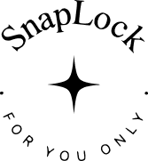
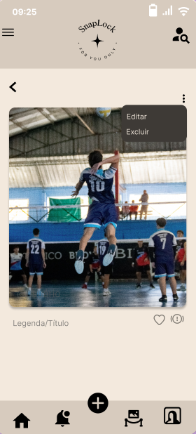
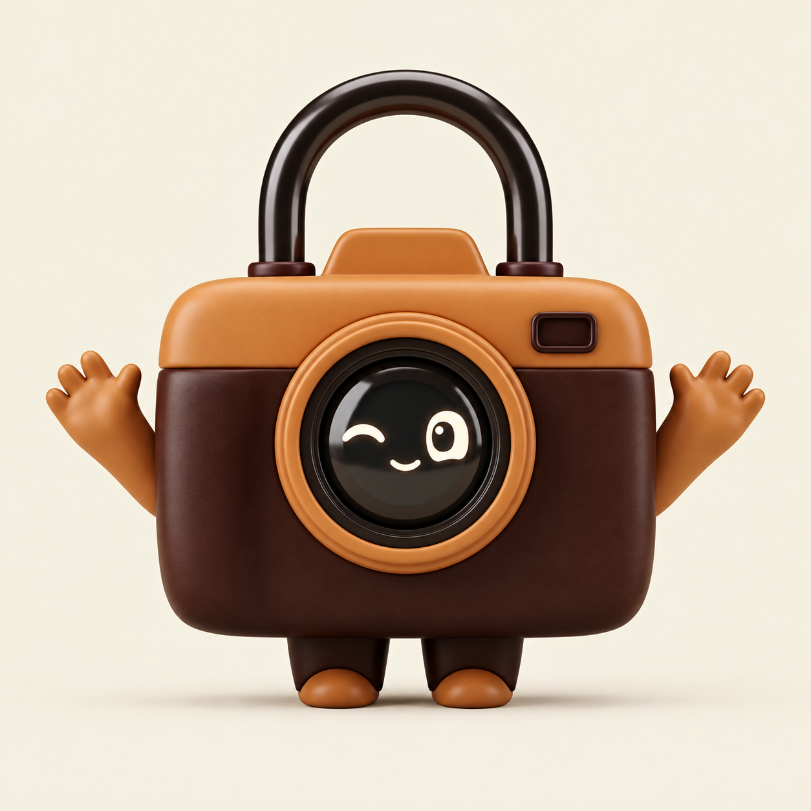
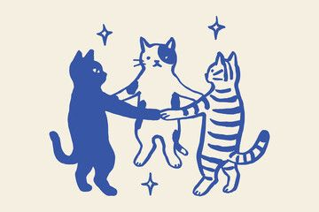

Fotos para o seu círculo
Compartilhe momentos que só amigos autorizados podem ver.
✳
O SnapLock é uma rede social feita para você compartilhar seus melhores momentos com quem realmente importa.

O SnapLock foi criado para você registrar e compartilhar momentos especiais com amigos próximos, em um ambiente pensado para ser seguro, privado e acolhedor.
Uma experiência simples, personalizada e pensada para aproximar as pessoas — não para criar pressão.
Compartilhe momentos que só amigos autorizados podem ver.
✳Reaja às publicações de forma leve, sem comentários ou mensagens privadas.
Personalize tema e fonte para deixar o app com a sua cara.
Adicione legendas e ajuste suas fotos com filtros e formatos.
Relembre os registros especiais do mês e do ano.
Cuide das suas informações e mantenha seu espaço atualizado.

A proposta do SnapLock é incentivar um compartilhamento mais tranquilo. O projeto prevê mecanismos de moderação e ferramentas para denunciar publicações que violem as diretrizes.

Seu círculo. Suas memórias. Seu espaço.
Conheça o app ↗